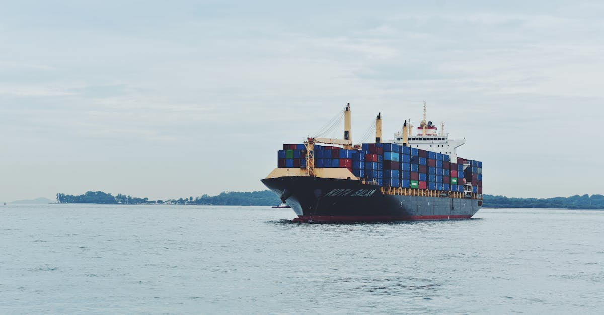

Ralentissement Inattendu de la Croissance Malaisienne au Premier Trimestre
L'économie malaisienne a affiché une croissance de 5,3% au premier trimestre de l'année, un chiffre qui, bien que positif, se révèle inférieur aux attentes des analystes. Cette décélération, bien que modeste, marque un tournant et soulève des interrogations sur la résilience de l'économie face aux chocs externes. Les principaux secteurs, tels que la fabrication et les services, ont ressenti les premières secousses d'un environnement géopolitique de plus en plus tendu. Le conflit au Moyen-Orient, en particulier, commence à se faire sentir à travers les chaînes d'approvisionnement mondiales et les flux commerciaux. Pour les investisseurs, cette nouvelle invite à une prudence accrue et à une réévaluation des risques. Dans un contexte où les marchés financiers sont de plus en plus interconnectés, la compréhension des facteurs macroéconomiques locaux et internationaux devient primordiale. La capacité d'une économie à naviguer ces turbulences dépendra de sa diversification, de sa flexibilité et de sa capacité d'adaptation. Les données de la Banque Negara Malaysia (BNM) indiquent que si la demande intérieure reste un moteur relativement stable, les pressions externes se font plus pressantes. L'inflation, bien que maîtrisée pour le moment, reste un point de vigilance, potentiellement exacerbée par les perturbations des coûts de transport et de l'énergie. L'industrie manufacturière, pilier de l'économie malaisienne, doit composer avec une demande mondiale qui pourrait se contracter, tandis que le secteur des services, bien que dynamique, est sensible aux dépenses de consommation et au tourisme, deux domaines potentiellement affectés par l'incertitude économique globale. Cette situation souligne l'importance pour les investisseurs de suivre de près non seulement les indicateurs économiques locaux, mais aussi les développements géopolitiques et leurs répercussions potentielles sur les marchés mondiaux, y compris les marchés des cryptomonnaies qui, bien que décentralisés, ne sont pas immunisés contre ces influences macroéconomiques.
👉 À lire : Musk: La course aux puces pour l'IA et les cryptos

L'Impact du Conflit au Moyen-Orient sur les Industries Clés
Le conflit grandissant au Moyen-Orient agit comme une ombre menaçante sur l'économie mondiale, et la Malaisie n'y échappe pas. Les répercussions se manifestent de plusieurs manières, affectant directement les industries motrices du pays. Premièrement, les perturbations des chaînes d'approvisionnement sont devenues une préoccupation majeure. Les routes maritimes, essentielles au commerce international, sont sous tension, entraînant des retards et une augmentation des coûts logistiques. Pour la Malaisie, dont une part significative du PIB repose sur l'exportation de biens manufacturés, notamment l'électronique, cela se traduit par une érosion des marges bénéficiaires et une potentielle perte de compétitivité. Deuxièmement, le secteur de l'énergie est directement touché. Bien que la Malaisie soit un producteur de pétrole et de gaz, l'instabilité dans une région productrice majeure entraîne une volatilité accrue des prix mondiaux. Une hausse des prix de l'énergie se répercute sur l'ensemble de l'économie, augmentant les coûts de production pour les entreprises et le coût de la vie pour les consommateurs. Troisièmement, l'incertitude géopolitique générale freine les investissements. Les entreprises, qu'elles soient locales ou étrangères, tendent à reporter ou à annuler leurs projets face à un avenir imprévisible. Cela affecte particulièrement les secteurs nécessitant des capitaux importants et une vision à long terme. Le secteur des services, bien que moins directement exposé aux perturbations physiques, souffre également de cette ambiance morose. La confiance des consommateurs peut diminuer, entraînant une baisse des dépenses discrétionnaires, et les flux touristiques, bien que moins dépendants du Moyen-Orient, peuvent être affectés par une perception globale d'insécurité. L'industrie manufacturière, en particulier, doit faire preuve d'une agilité remarquable pour s'adapter aux nouvelles réalités, cherchant des sources d'approvisionnement alternatives et optimisant ses processus pour maintenir sa rentabilité. Cette situation complexe rappelle l'interdépendance des économies mondiales et l'importance de stratégies d'investissement diversifiées et résilientes, capables d'anticiper et de réagir aux événements imprévus, y compris sur les marchés financiers volatils comme celui des cryptomonnaies.
👉 À lire : IA au secours des finances scolaires: Une opportunité pour l'investissement crypto?
Analyse des Indicateurs Économiques et Perspectives Futures
L'analyse des indicateurs économiques malaisiens révèle une image nuancée. Si le chiffre de croissance du PIB de 5,3% témoigne d'une certaine résilience, il est crucial de regarder au-delà de cette moyenne. Les données détaillées montrent que la contribution du secteur manufacturier a ralenti, tandis que celui des services, bien que plus robuste, n'a pas suffi à compenser entièrement ce fléchissement. Les exportations, un moteur traditionnel de l'économie malaisienne, ont également montré des signes de faiblesse, directement liés au ralentissement de la demande mondiale et aux perturbations logistiques mentionnées précédemment. La Banque Negara Malaysia (BNM) anticipe un environnement externe plus difficile pour le reste de l'année, avec des risques accrus liés à l'inflation persistante dans les économies développées et à la persistance des tensions géopolitiques. Les perspectives futures dépendront largement de la capacité de la Malaisie à naviguer ces vents contraires. Plusieurs facteurs seront déterminants :
- La demande intérieure : La consommation privée, soutenue par un marché du travail relativement stable et des politiques gouvernementales visant à stimuler le pouvoir d'achat, devrait rester un pilier.
- La diversification économique : Les efforts visant à réduire la dépendance aux exportations de matières premières et à développer des secteurs à plus forte valeur ajoutée, comme la technologie et les services numériques, seront cruciaux.
- La gestion de l'inflation : Une politique monétaire prudente sera nécessaire pour contenir les pressions inflationnistes sans étouffer la croissance.
- L'attractivité pour les investissements directs étrangers (IDE) : La Malaisie devra maintenir un environnement propice aux affaires pour attirer les capitaux nécessaires à son développement, malgré l'incertitude mondiale.
Dans ce contexte, les marchés financiers, y compris le marché des cryptomonnaies, réagissent aux signaux macroéconomiques. Une économie nationale qui montre des signes de ralentissement peut influencer la confiance des investisseurs, poussant certains à rechercher des actifs perçus comme plus sûrs ou, au contraire, à explorer des opportunités dans des marchés plus volatils mais potentiellement plus rémunérateurs, comme celui des cryptos, où des stratégies de trading algorithmique sophistiquées, potentiellement basées sur l'IA, peuvent chercher à exploiter les inefficiences créées par l'incertitude.

L'Opportunité pour les Stratégies de Trading Basées sur l'IA
Face à une économie mondiale de plus en plus complexe et volatile, les stratégies de trading traditionnelles montrent leurs limites. Les fluctuations rapides des marchés, exacerbées par des événements géopolitiques imprévus et des indicateurs économiques contradictoires, créent un environnement où la rapidité de réaction et la capacité d'analyse de volumes massifs de données sont essentielles. C'est dans ce contexte que les agents IA spécialisés dans le trading de cryptomonnaies prennent tout leur sens. Contrairement aux traders humains, qui peuvent être limités par la fatigue, les émotions ou la capacité cognitive, un agent IA peut fonctionner 24h/24, 7j/7, analysant en temps réel une multitude de facteurs :
- Données macroéconomiques : Suivi des publications de PIB, d'inflation, de taux d'intérêt, et évaluation de leur impact potentiel sur les marchés, y compris ceux des cryptos.
- Actualités géopolitiques : Traitement et analyse du langage naturel des dépêches d'actualités pour identifier rapidement les risques et opportunités émergents.
- Analyse technique et sentimentale : Identification de patterns sur les graphiques de prix, analyse des volumes, et évaluation du sentiment général du marché à travers les réseaux sociaux et les forums spécialisés.
- Corrélation inter-marchés : Compréhension des liens complexes entre les marchés traditionnels (actions, obligations, matières premières) et le marché des cryptomonnaies.
L'agent IA de CryptoMind AI, par exemple, est conçu pour traiter ces informations à une vitesse et une échelle inaccessibles à l'homme. Il peut identifier des opportunités de trading dans des conditions de marché changeantes, ajuster les paramètres des transactions en fonction des nouvelles données, et exécuter des ordres de manière quasi instantanée. L'objectif n'est pas de prédire l'avenir avec certitude, mais de construire des stratégies robustes qui maximisent les chances de succès dans un environnement incertain. La récente publication du PIB malaisien, bien qu'indiquant un ralentissement, est une donnée parmi d'autres que l'IA peut intégrer dans son analyse globale. Un ralentissement dans une économie émergente peut, par exemple, pousser certains investisseurs à chercher des rendements plus élevés ailleurs, potentiellement dans des actifs numériques plus volatils, créant ainsi des opportunités que l'IA peut identifier et exploiter.
Comment l'IA Anticipe les Risques Macroéconomiques pour le Trading Crypto
La complexité des marchés financiers modernes, où les flux de capitaux transcendent les frontières et les classes d'actifs, rend l'analyse macroéconomique plus pertinente que jamais pour le trading de cryptomonnaies. Contrairement à une idée reçue, le marché des cryptos, bien que jeune et décentralisé, n'est pas totalement déconnecté des réalités économiques mondiales. Les événements comme le ralentissement du PIB malaisien, l'escalade d'un conflit au Moyen-Orient, ou les décisions des banques centrales influencent directement ou indirectement le sentiment des investisseurs et les flux de capitaux. Un agent IA spécialisé, tel que celui promu par CryptoMind AI, est entraîné à reconnaître et à quantifier ces influences. Il ne se contente pas de suivre les prix des cryptomonnaies ; il analyse en temps réel :
- Les indicateurs économiques clés de diverses régions (PIB, inflation, emploi, balance commerciale).
- Les flux de capitaux internationaux et les mouvements sur les marchés des changes.
- Les prix des matières premières (pétrole, or) qui peuvent servir de baromètres de l'incertitude économique.
- Les décisions de politique monétaire des grandes banques centrales (Fed, BCE).
- Les actualités financières et géopolitiques via des algorithmes de traitement du langage naturel (NLP).
Par exemple, si l'IA détecte une augmentation significative du risque géopolitique entraînant une hausse des prix du pétrole et une fuite vers des actifs refuges traditionnels comme l'or, elle peut anticiper une potentielle aversion au risque qui pourrait affecter négativement les actifs plus spéculatifs, y compris certaines cryptomonnaies. Inversement, une situation où les banques centrales assouplissent leur politique monétaire pourrait être interprétée comme un signal positif pour les actifs à risque. L'agent IA évalue constamment ces corrélations et divergences, ajustant ses stratégies de trading pour s'adapter. Il peut identifier des opportunités de short selling lorsque des risques baissiers sont détectés, ou au contraire, renforcer des positions sur des cryptomonnaies qui montrent une résilience particulière face aux turbulences mondiales. L'avantage réside dans la capacité de l'IA à traiter et à réagir à ces informations bien plus rapidement qu'un humain, permettant d'exploiter des opportunités fugaces avant qu'elles ne disparaissent ou d'éviter des pertes substantielles en se retirant du marché à temps. La clé est la capacité d'adaptation continue, où l'IA apprend et affine ses modèles en permanence.

Diversification et Gestion du Risque : Les Clés d'un Portefeuille Résilient
Dans un environnement économique marqué par l'incertitude, comme le montre le récent rapport sur le PIB malaisien, la diversification et une gestion rigoureuse du risque ne sont plus des options, mais des nécessités absolues pour tout investisseur. Le conflit au Moyen-Orient et ses répercussions sur les chaînes d'approvisionnement mondiales servent de rappel brutal que les marchés sont interconnectés et qu'aucun actif n'est totalement à l'abri des chocs externes. Pour les investisseurs traditionnels, cela signifie ne pas mettre tous ses œufs dans le même panier, en répartissant ses investissements entre différentes classes d'actifs (actions, obligations, immobilier, matières premières) et zones géographiques. Mais qu'en est-il des marchés plus récents et volatils comme celui des cryptomonnaies ? L'intégration des cryptos dans un portefeuille diversifié nécessite une approche encore plus prudente. Voici quelques principes clés :
- Allocation d'actifs réfléchie : Définir une part de son portefeuille allouée aux cryptomonnaies, généralement considérée comme une classe d'actifs à haut risque, et s'y tenir. Cette allocation doit être proportionnelle à sa tolérance au risque.
- Sélection judicieuse des cryptomonnaies : Ne pas se focaliser uniquement sur les actifs les plus médiatisés. Analyser les projets sous-jacents, leur utilité réelle, leur technologie, leur équipe de développement et leur capitalisation boursière.
- Utilisation d'outils d'analyse avancés : Les agents IA peuvent jouer un rôle crucial ici. En analysant des milliers de données en temps réel, ils peuvent aider à identifier les cryptomonnaies les plus prometteuses ou celles qui présentent des risques excessifs.
- Stratégies de couverture : Envisager des stratégies pour se protéger contre la volatilité extrême, comme le stop-loss automatique ou l'investissement dans des stablecoins adossés à des devises fiat.
- Veille constante : Suivre activement les développements macroéconomiques et géopolitiques, car ils peuvent avoir un impact significatif, même sur le marché des cryptos.
L'agent IA de CryptoMind AI, par exemple, est conçu pour intégrer ces principes de gestion du risque. Il ne se contente pas de rechercher des gains rapides ; il est programmé pour identifier et limiter les pertes potentielles en fonction de paramètres de risque prédéfinis et de l'évolution des conditions de marché. En automatisant la surveillance et l'exécution des stratégies de gestion du risque, il permet aux investisseurs de naviguer les marchés de cryptomonnaies avec une plus grande confiance, même lorsque les nouvelles économiques mondiales, comme le ralentissement malaisien, suggèrent une période de prudence accrue.
Conclusion : Naviguer l'Incertitude avec l'Intelligence Artificielle
Le ralentissement de la croissance du PIB malaisien au premier trimestre, sous l'influence croissante du conflit au Moyen-Orient, est un symptôme d'une économie mondiale confrontée à des défis multiples. Les perturbations des chaînes d'approvisionnement, la volatilité des prix de l'énergie et l'incertitude géopolitique générale créent un environnement complexe pour les investisseurs. Dans ce paysage mouvant, où les marchés financiers traditionnels et les marchés émergents comme celui des cryptomonnaies sont de plus en plus imbriqués, la capacité à analyser rapidement et efficacement une quantité massive d'informations devient un avantage compétitif décisif. Les méthodes d'investissement traditionnelles, souvent basées sur des analyses historiques et des réactions différées, peinent à suivre le rythme des événements. C'est ici que l'intelligence artificielle entre en jeu. Les agents IA spécialisés dans le trading de cryptomonnaies, comme celui proposé par CryptoMind AI, offrent une solution pour naviguer cette complexité. En opérant 24h/24, 7j/7, ces agents sont capables de surveiller les indicateurs économiques mondiaux, d'analyser les flux d'actualités en temps réel, d'évaluer le sentiment du marché et d'exécuter des stratégies de trading optimisées pour minimiser les risques et maximiser les opportunités. Ils permettent d'intégrer des données macroéconomiques, telles que le ralentissement malaisien, dans une analyse globale des marchés, en identifiant les corrélations et les impacts potentiels sur les actifs numériques. L'IA ne prétend pas éliminer le risque, mais elle le gère de manière plus proactive et informée. Pour les investisseurs cherchant à protéger et à faire fructifier leur capital dans un monde incertain, l'adoption d'outils basés sur l'IA n'est plus une simple option technologique, mais une stratégie d'investissement essentielle pour rester compétitif et résilient face aux défis économiques et géopolitiques de demain. L'avenir du trading, qu'il soit traditionnel ou axé sur les cryptomonnaies, sera indéniablement façonné par la puissance de l'intelligence artificielle.